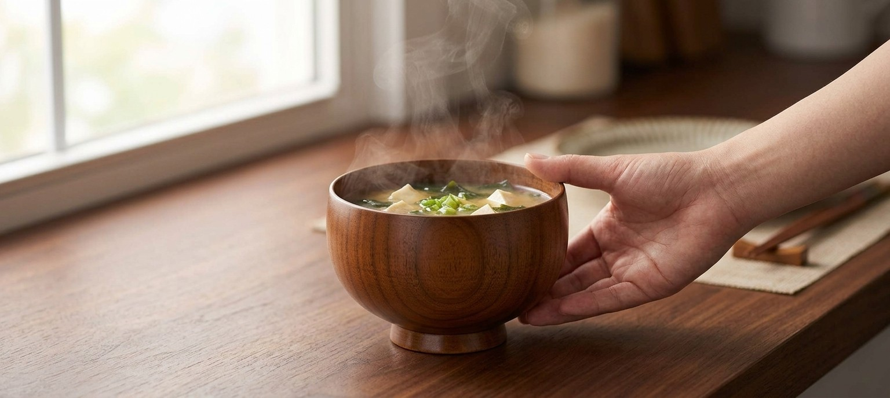
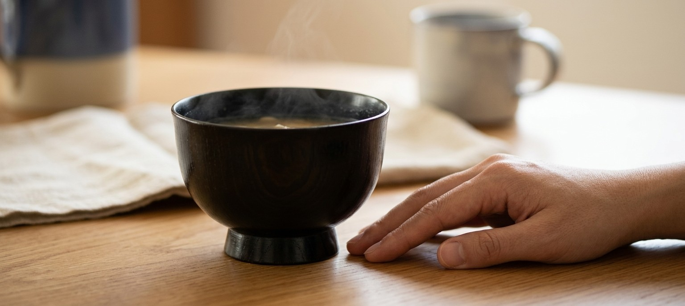
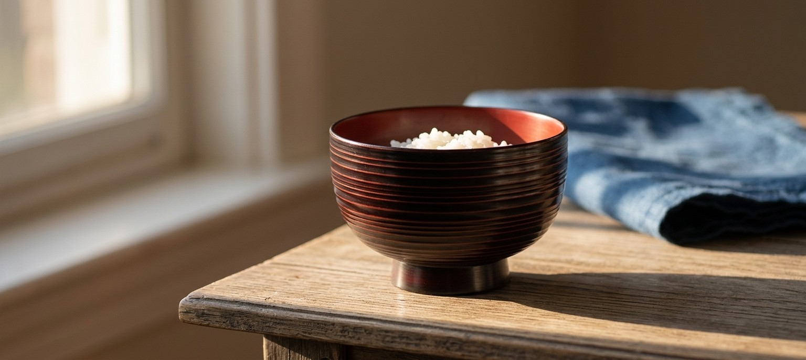
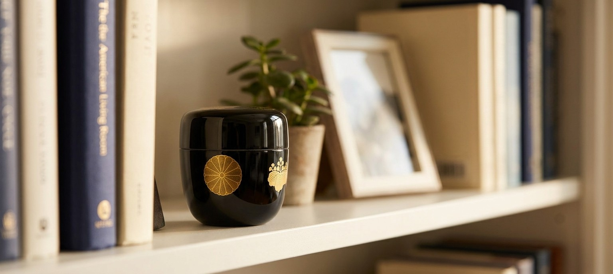

"Lacquerware" covers a wider range than one glossy black bowl. These four pieces come from three different makers and three different price points -- two solve a real physical problem (heat), one is built around a single quiet pattern, and one isn't really about food at all. Here's what each one is actually for, including the parts of their listings worth knowing before you buy.
This isn't a coating trick -- it's the wood itself. Wood's thermal conductivity runs around 0.1–0.2 W/m·K, well under ceramic or metal's 1+ W/m·K, so heat moves through it far more slowly. Fill it with hot miso soup and the liquid stays hot while the exterior wall stays comfortable enough to hold with a bare hand -- no potholder, no waiting for it to cool down first. It's turned from natural cherry wood in Yamanaka, Ishikawa, a wood-turning tradition going back roughly 450 years, and finished with a lacquer coating in a warm amber-brown. At time of writing this listing showed only 3 left in stock and has 0 Amazon reviews yet -- newer listing, worth checking before you plan around it.
As an Amazon Associate, I earn from qualifying purchases.
Most bowls just sit flat, which means the hottest part of the bowl -- the lower wall, closest to the food -- is also the part nearest your hand and the table. This bowl's kodai, a tall, distinctly flared pedestal foot, lifts that lower wall up and away, so a hand resting on the table next to it never has to touch the hot part at all. The near-black lacquer is translucent enough that the natural wood grain still shows through in soft pale arcs when light catches it -- proof it's finished wood underneath, not a solid-color coating. This is the pricier and slower of the two function pieces here: $74.04, and the listing currently reads "usually ships within 6 weeks" rather than the few-day delivery most of this page's other pieces get -- worth knowing before you order it for a specific date. 0 Amazon reviews so far.

As an Amazon Associate, I earn from qualifying purchases.
This one isn't solving a problem -- it's just one bowl, turned on a lathe with dozens of fine, closely-spaced rings running around it in a warm brick-red against black, the pattern itself the entire point. Catch it in low morning light and each ring picks up its own line of highlight and shadow, which is the whole reason to own it: a single object worth looking at for a second longer before you eat. It's from Tsubakihara Shikki, an Echizen lacquerware maker based in Sabae, Fukui Prefecture, one of Japan's oldest lacquerware-producing regions. Worth knowing: the listing itself describes the finish as "wood resin (urethane coated)" rather than traditional hand-applied urushi lacquer over solid wood -- an accessible, dishwasher-unsafe-but-affordable version of the look, not a claim to hand-lacquered heirloom status. $31.23, 0 Amazon reviews so far.

As an Amazon Associate, I earn from qualifying purchases.
A natsume is a lidded container for holding powdered matcha before a tea ceremony -- but the honest reason to include one here is that it's small enough and handsome enough to just sit out on a shelf, the way the other three pieces on this page sit out on a table. The two gold crests on this one aren't decorative filler: in 1586, Emperor Go-Yozei granted peasant-born ruler Toyotomi Hideyoshi the rare honor of using both the imperial chrysanthemum crest and his own paulownia crest -- the chrysanthemum remains Japan's official government seal today. This specific $65.20 piece is a modern reproduction (the listing states the material as plastic/phenolic resin, not hand-lacquered wood), and it has 0 Amazon reviews yet -- it's here for the history and the shelf-life, not for a claim to being an antique.

As an Amazon Associate, I earn from qualifying purchases.
"Lacquerware" on this page turned out to mean three different things: solid wood finished in real lacquer (the first two bowls), an affordable urethane-coated wood-resin version of the same look (the swirl bowl), and a lacquer-finish resin reproduction built around a genuine piece of imperial history rather than a claim to being hand-carved (the natsume). None of that makes the cheaper pieces fakes -- it makes them different trade-offs, honestly labeled by their own listings once you read past the photos. What ties the four together isn't the material, it's that each one earns a specific place in a home: two by solving a heat problem, one by being worth a second look, one by being worth keeping out where you can see it.
This page contains affiliate links -- if you buy through one, it costs you nothing extra and helps support this site. All four listings had 0 Amazon reviews at time of writing; these are newer or lower-volume listings, not established best-sellers, and that's stated plainly rather than implied otherwise. The Shirasagi wood bowl showed only 3 units in stock; the Ancient kodai bowl's listing read "usually ships within 6 weeks" rather than a standard delivery window -- both noted above rather than glossed over. Material composition (natural wood + lacquer paint for the first two pieces; wood resin with a urethane-coated finish for the swirl bowl; phenolic resin/plastic for the natsume) is taken directly from each product's own Amazon listing, not assumed from appearance. The 0.1–0.2 W/m·K wood thermal conductivity figure is a general material-science range for wood, not a lab measurement of this specific bowl. The 1586 imperial crest grant to Toyotomi Hideyoshi is documented Japanese history, independent of this specific product's own authenticity or age.